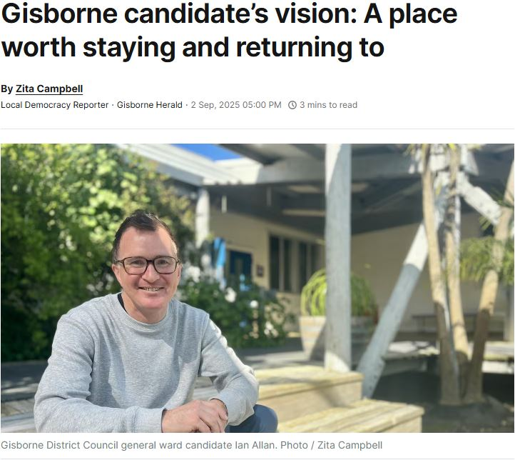

Posted: September 3, 2025
Bringing education, research, trusts, and industry together; and the problem with Joint Ventures
I was recently interviewed by Local Democracy Reporter Zita Campbell*.
I touched on the Council as a facilitator across education, research, business, trusts, and industrial leaders.
The idea is to ensure we're nurturing the right pathways for locals to solve hard problems in useful work with higher incomes. Which spills over to increasing regional wealth and attracting capital (human and financial). And making rates affordable!
It's a long play but it's a start to addressing the underlying problem of broadly low free incomes in the region.
The reason I suggest the Council plays a role here is I've seen how Joint Ventures (JVs) more often than not wither on the vine.
In JVs there is early enthusiasm with parties coming together on a solution to a shared market opportunity. An opportunity that they couldn't reasonably achieve on their own. It might begin as a simple partnership but the opportunity looks so big that they put skin in the game. It all makes sense.
But after some time, often a year or three, the JV starts seeing funding squeezed and resources pulled back, until ultimately it's wound down citing a lack of strategic alignment or something.
The problem is the parties funding the JV have their own stakeholders, shareholders, strategies, and shifting priorities. And especially when times get tight, they want to allocate their energy and capital to what's critical to them.
It's optimistic to think the Council can do this.
But when our education, research, business, trusts, and industrial leaders start drifting back towards their own immediate needs, someone with influence needs to keep reminding them:
"Hey, you're losing sight of the big picture, the long term public good, the amazing joined up story that makes this a place worth staying in, a place worth returning to."
* Thank you Zita for turning over an hour of me heading off on tangents (Grey St) into a coherent profile.
Other diary entries
- Asked about the kiwifruit industry
- On household incomes and wealth
- Attending the candidate speed dating evening at Siduri
- Briefly on climate change, and retail
- Out and about for the Arts Festival kick-off weekend
- On council waste
- Attending the Candid Speed Date at JT Contractors Ops Yard
- My council candidate video
- Marching in support of those leading the pay equity fight
- That not being on social media thing
- Attending Community Hui at the Gisborne Bowling Club
- Podcast with Jack Marshall - Now That's an Idea
- TL;DR? Here's the 1 minute pitch
- How to vote
- Ways to support horticulture without a background in horticulture
- A good overview of my, and your other fave's, policy positions
- A bit of motivation to make a start
- The homeless - what to do?
- Māori Wards - a union of Te Ao Māori and a struggling western democratic capitalism
- Attending the Gisborne Business and Professional Women's Meet the Candidates Meeting
- Insulation - a personal reflection on the Trust Tairāwhiti AGM
- Attending the Gisborne Chamber of Commerce Meet the Candidates Debate
- Attending Kiri Te Kanawa Retirement Village's Meet the Candidates Afternoon
- Attending U3A's Meet the Candidates Morning